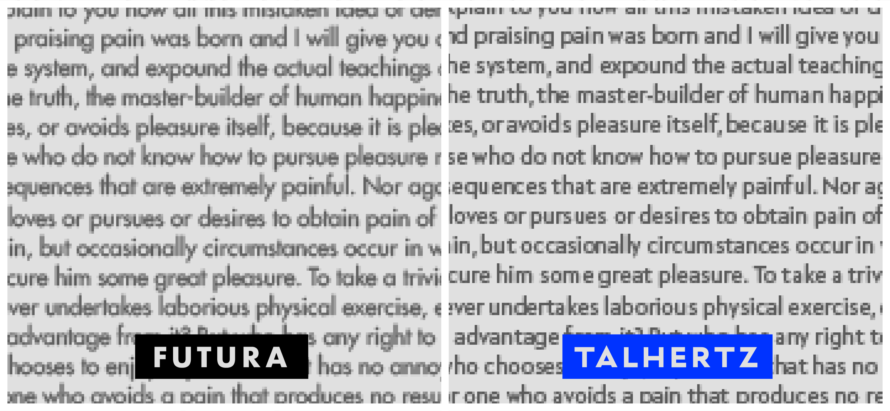
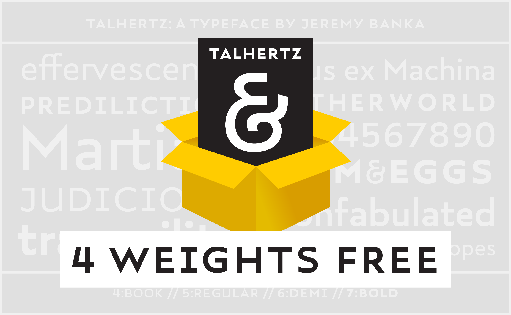

Talhertz is a typeface of pure ideals and simple truths. It invites readers with a grand promise—a world of abstract form. A rhythm of geometric circles and precise angles dazzles the eye as the letters reveal their inner nature: smooth polygons with linguistic value.

Unlike most idealists, Talhertz’ promise pans out. Words link into lines, and lines into paragraphs, without losing the reader in a labyrinth of alike forms. not lost in the race to geometric similitude: with a fundamentally humanist structure and subtle formal asymmetries, Talhertz’ paragraphs are realized in stunning relief.

DOWNLOAD